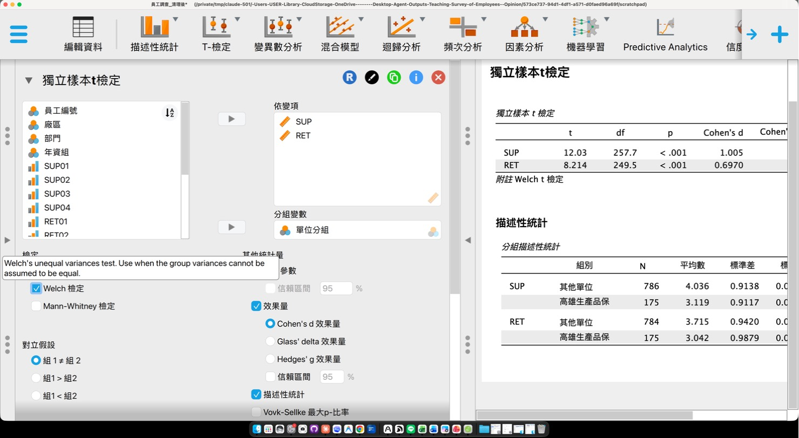

AI Agent 的資料分析流程 Planning, Tool Use and Code Execution
Yao, S., Zhao, J., Yu, D., Du, N., Shafran, I., Narasimhan, K., & Cao, Y. (2023). ReAct: Synergizing reasoning and acting in language models. International Conference on Learning Representations. https://arxiv.org/abs/2210.03629
Anthropic. (2024, December 19). Building effective agents. https://www.anthropic.com/research/building-effective-agents
第一部分國立中山大學人力資源管理研究所 王豫萱06
聊天機器人與 AI Agent
對話回答與 AI Agent 的差異
只用對話回答
AI Agent
怎麼得到數字
依訓練資料推測，可能編造
寫程式讀檔案，實際計算
做事的方式
一次回答
先規劃步驟，執行後看結果再修正
可用的工具
文字
程式執行、讀寫檔案、搜尋、畫圖
你可以查核的
只有回答文字
程式碼、每一步的輸出、中間檔案
上傳檔案後，ChatGPT 與 Claude 會自動寫程式執行 回答附有程式碼與執行結果時，數字來自實際計算
Claude Code、Google Antigravity 等工具可在自己的電腦上執行，期末專題可以使用國立中山大學人力資源管理研究所 王豫萱07
Agent 的工作循環
Agent 的工作循環：規劃、調用工具、執行與檢查
規劃Planning 把任務拆成步驟
→
調用工具Tool Use 讀檔、計算、畫圖
→
執行程式Code Execution 寫 Python 並執行
→
檢查結果Observation 出錯就修正再跑
Agent 重複此循環至任務完成後回報 循環中的部分決定需要人確認
Yao et al.（2023）稱為推理與行動交替（ReAct）國立中山大學人力資源管理研究所 王豫萱08
模擬畫面：程式與數字為實際執行結果，畫面依 Claude Code 的樣式重現，約 80 秒國立中山大學人力資源管理研究所 王豫萱16
Agent 步驟 操作 JASP
Agent 操作 JASP 的過程

Agent 開啟清理後的 CSV為什麼：JASP 只用來查核，不重做清理
依提示選擇分析與選項為什麼：設定與 Python 相同，結果才能比對
讀取表格，和程式結果對照為什麼：兩個工具一致，數字較可信
Claude 的電腦操作功能（computer use）；JASP 讀的是第 1 輪清理後匯出的 CSV國立中山大學人力資源管理研究所 王豫萱17
02
資料清理 Careless Responding, Reverse Items, Missing Data
Meade, A. W., & Craig, S. B. (2012). Identifying careless responses in survey data. Psychological Methods, 17(3), 437–455. https://doi.org/10.1037/a0028085
Newman, D. A. (2014). Missing data: Five practical guidelines. Organizational Research Methods, 17(4), 372–411. https://doi.org/10.1177/1094428114548590
Streiner, D. L. (2003). Starting at the beginning: An introduction to coefficient alpha and internal consistency. Journal of Personality Assessment, 80(1), 99–103. https://doi.org/10.1207/S15327752JPA8001_18
Delacre, M., Lakens, D., & Leys, C. (2017). Why psychologists should by default use Welch’s t-test instead of Student’s t-test. International Review of Social Psychology, 30(1), 92–101. https://doi.org/10.5334/irsp.82
Lakens, D. (2013). Calculating and reporting effect sizes to facilitate cumulative science: A practical primer for t-tests and ANOVAs. Frontiers in Psychology, 4, Article 863. https://doi.org/10.3389/fpsyg.2013.00863
Cohen, J. (1988). Statistical power analysis for the behavioral sciences (2nd ed.). Lawrence Erlbaum Associates.
第四部分國立中山大學人力資源管理研究所 王豫萱37
p 值與效果量
p 值與 Cohen’s d 的意義
p 值
是否為抽樣誤差
兩組平均的差異，如果母體沒有差別，抽樣出現這麼大差異的機率 p < .05 稱為顯著
Cohen’s d
差異大小
平均差除以合併標準差 約 .2 小、.5 中、.8 大
樣本越大，很小的差異也會顯著；管理決策依 d 判斷 兩組人數或變異不同時，用 Welch t 檢定（不假設變異數相等）
Lakens, D. (2013). Calculating and reporting effect sizes to facilitate cumulative science: A practical primer for t-tests and ANOVAs. Frontiers in Psychology, 4, Article 863. https://doi.org/10.3389/fpsyg.2013.00863
Cohen, J. (1988). Statistical power analysis for the behavioral sciences (2nd ed.). Lawrence Erlbaum Associates.
第五部分國立中山大學人力資源管理研究所 王豫萱44
三組以上
三組以上的比較：單因子 ANOVA
F 與 p
各組平均是否不全相同 顯著只表示「至少有一組不同」
η²（eta 平方）
群組能解釋多少比例的差異 約 .01 小、.06 中、.14 大
事後比較
F 顯著後，找出哪幾組不同 同時控制多次比較的錯誤率
以 t 檢定兩兩比較十次，偶然顯著的機率會增加 Levene 檢定顯著時，改用 Welch ANOVA 與 Games-Howell 事後比較